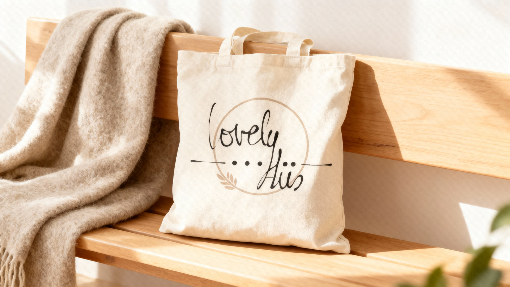
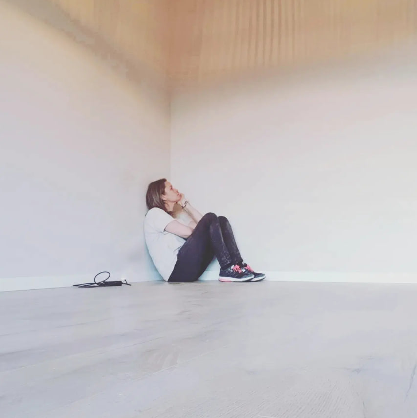
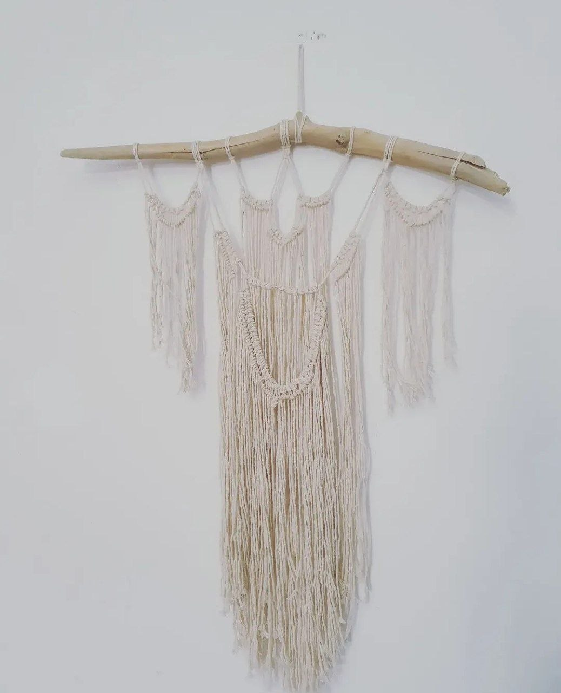
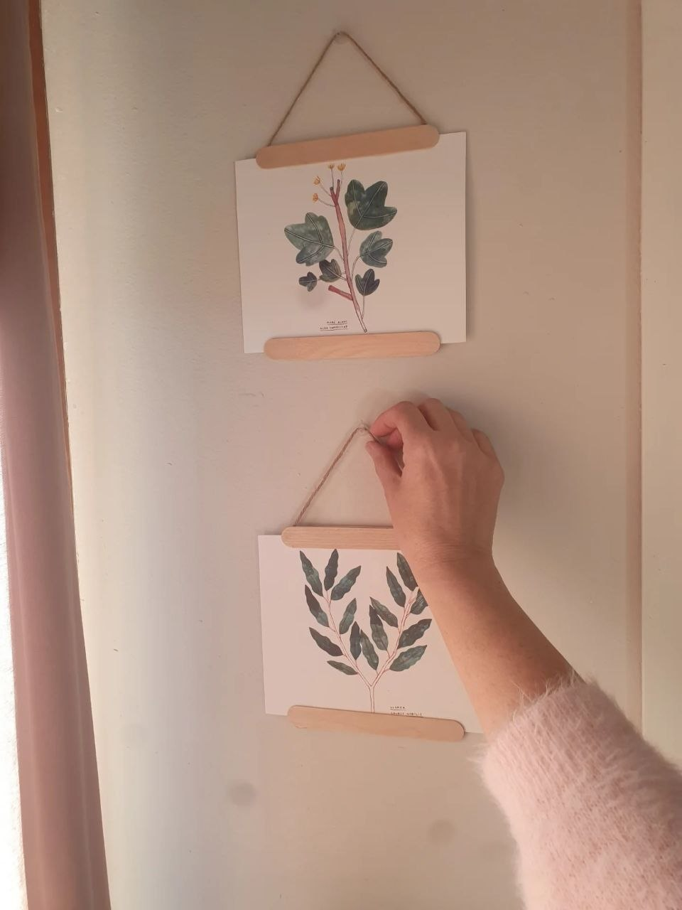
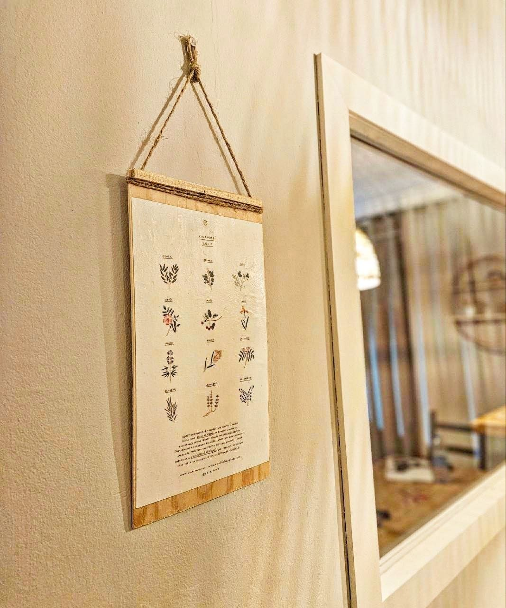
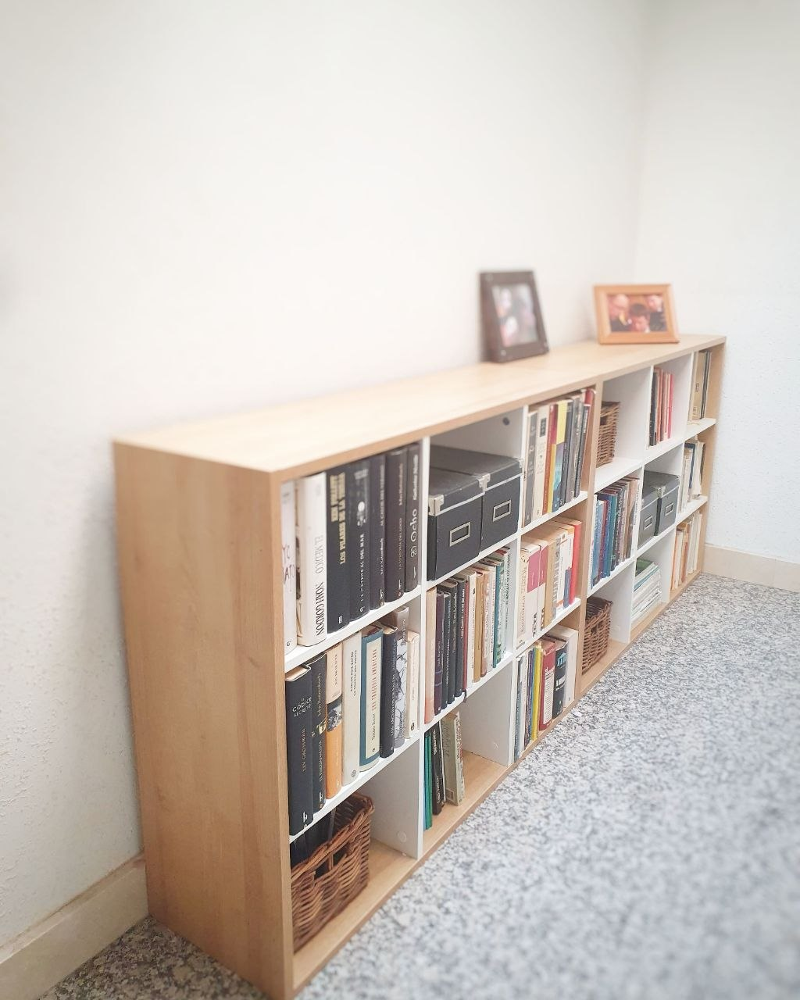

.jpg)
Feta a mà
Ventalls d'espart
Espart trenat, flors seques i molta paciència. Cada parella és diferent perquè cada bri és diferent. Perfectes per a una paret que necessita textura sense cridar.

Lovely Hüs
Peces fetes a mà i seleccionades amb criteri.
Per a cases que es senten seves.

Qui som
Lovely Hüs neix del desig de tenir una llar que se senti de debò. No perfecta. No de catàleg. Teva.
Cada peça que trobaràs aquí ha passat per les meves mans. Algunes les he creat des de zero. Altres les he trobat en un mercat, en una cantonada, i hi he vist el que podien arribar a ser.
Cap arriba aquí per omplir un espai.
Totes hi arriben per aportar alguna cosa.
"No dissenyo espais bonics.
Creo llocs on quedar-se una estona més."
Les peces
Cada peça és única.
Quan marxa, deixa lloc a la següent.
Espart trenat, flors seques i molta paciència. Cada parella és diferent perquè cada bri és diferent. Perfectes per a una paret que necessita textura sense cridar.
.jpg)
Circular, càlida i honesta. Li dono el seu lloc a la paret i transforma qualsevol racó. Li pots posar el que vulguis; ella ja fa la feina.

Cotó cru, nusos fets un a un i una branca trobada. No hi ha dos iguals. Ocupa una paret sencera sense pesar gens.

Portallàmines de fusta i corda de lli.
Cada làmina, seleccionada amb cura.
Per penjar soles o en composició.
Canvien l'ambient d'una paret en pocs minuts.

Il·lustracions de plantes, paper de qualitat i marc de fusta. Funcional i bonic. Del tipus que no voldràs treure quan canviï el mes.
.jpg)
Natura seca en el seu millor moment.
Aporten textura i calidesa sense fer soroll.
Les trio individualment per la seva forma i el seu color.
✦ Les peces s'esgoten i no sempre es reposen. Si t'agrada alguna, no esperis massa.
La llar
.jpg)
.jpg)
.jpg)

.jpg)
El procés
Comença en un mercat, en un passeig, en una branca que cau bé. Mai en un catàleg.
Cada peça passa per les meves mans. La neteig, la transformo, li dono el seu lloc. Si no em convenç completament, no arriba aquí.
El resultat mai és perfecte. És millor que perfecte: és real.
Segueix el procés a Instagram →Més que peces
Si tens un racó que no acaba de funcionar, podem parlar. M'expliques com és, m'envies fotos, i et dic exactament què canviaria i com.
Sense visita. Sense complicacions. Amb criteri.
Parlem